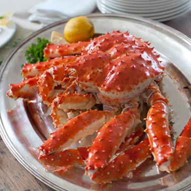

King Crab
Return to homepage

This is a really kingly king crab!
Doesn't this meal look delicious? All you need is high quality, melted butter, a squeeze of lemon, and some fresh chives. And voilà!
Ingredients
- King crab legs (375 - 500 grams per person)
- 200 grams soft dairy butter, for melting
- 3 cloves garlic, finely chopped
- 3 tbsp chopped chives
- 2 tsp lemon juice
- 1 tsp sherry vinegar
- Salt and pepper
Instructions
- Divide the king crab legs lengthwise, check for and remove any cartilage inside the meat.
- Melt the butter and mix in the remaining ingredients.
- Pour the melted butter mixture on each fillet. Add a little salt and pepper.
- Place the filets on a baking tray surrounded by a little crumpled aluminium foil so that the filets remain firmly in place. Bake at the top of the oven (at 220 degrees Celsius) or gratinate under the grill (at 250 degrees Celsius) until the meat is cooked (approx. 7-8 minutes).
- Serve together with salad and freshly baked bread.